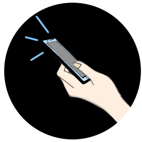
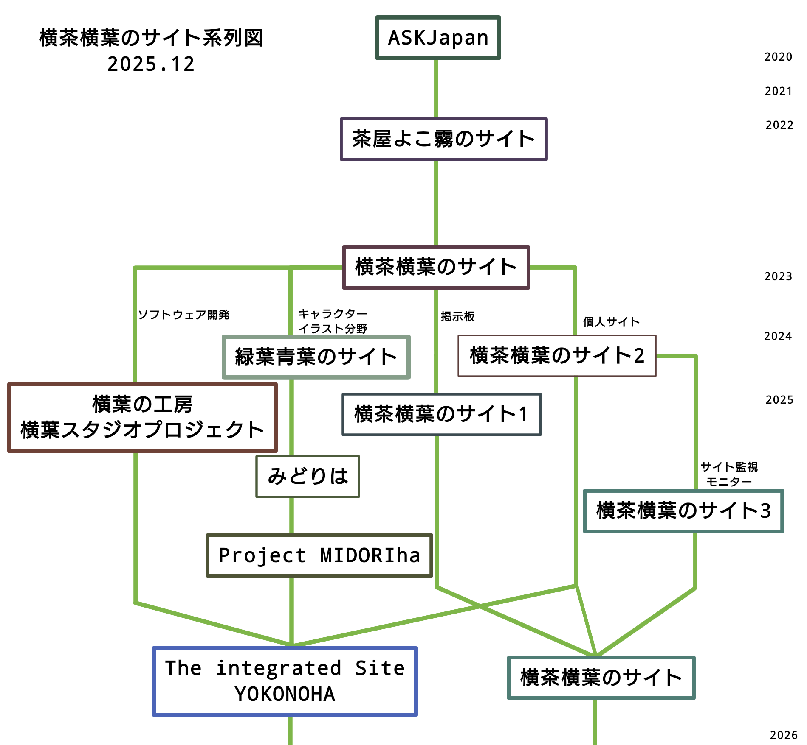

Who are you?
横茶横葉/Y.Yokoha
2018年からフリーソフトウェア・アプリ開発活動を始め、現在では3Dモデルやイラスト、動画制作、サイトデザイン、Webアプリ開発などジャンルにとらわれない多方面のデジタル創作活動を行っている(?)なクリエイター(個人的にクリエイターと名乗るのは好きではないらしい)。
しかし、クリエイターといってもこれを生業としている訳ではなく、あくまでも趣味・社会奉仕活動の一環として行っているだけの人である。
横茶横葉という活動名は単にSEO対策の一環であり、テキトーにつけたらしい。
特記事項:スマホへの愛は尋常ではない(異常)。一時期は26台ものスマホを所有していたという。
Hisorical Aspects
当サイトの成り立ちと活動名変遷の至極どうでもいい歴史をまとめました。
図1. 横茶横葉のサイト変遷系列図
一度サイトを分割した時期がありましたが、管理が追い付かなくなったので2つに絞りました(そりゃそうですよね!)。
ASK Japan
初めてサイトを立てた際の活動名称。
ASKには
「こんなソフトorアプリ無いの?って尋ねられた(ask)り、作ってよ! ってお願い(ask)される前からすでにあなたに合った物を多数公開しているサイトです。」
という意味が込められていたとか、なんとか。
でも、そんなことは一切なかったので、名称変更することに。(3年間維持)
当時のサイトはGoogleSitesを利用していました。ファビコン(サイトロゴ)は特に無し。
茶屋よこ霧のサイト
意味の分からない名前で活動を再開。しかし、1年程ですぐに、「名前が意味不明」と感じるようになったので、名前を変えることになってしまいました。
(茶屋:ゆっくり休めるサイト のコンセプトに由来 /よこ霧:フィーリングでつけた名前。)
サイトを閉める直前からGithub Pagesへ移行。現在まで続く狂気の手打ちサイト作りをスタート。サイトロゴは葉っぱのアイコン。この頃ツイッターも開設しました。
また、動画投稿を初めたのもこの時代でした。動画の内容、どれも下手で拙いものでした。よよよ...。
横茶横葉のサイト(初期)
名前を横茶横葉に変更。横茶横葉はよこ霧から横という字を得てそれに茶葉という語を混ぜただけ。SEO対策として絶対競合のない名前にしたかったのでこうしました。
従来のやり方を大幅に変更しながら、ソフトウェアとアプリ以外にイラスト分野にも進出。コンテンツが増えてサイトが華やかになる...
と思っていましたがCSSの存在を知らなかったので、サイトはHTMLだけの超簡素で見応えのないものでした。
サイトロゴは"大好きな"スマホを手に持ってるイラストにしました。
横茶横葉のサイト(現在)
華やかなデザインを追求するため、まずはCSSを猛勉強することに。それでCaffeineCSSを製作しました。これをベースにサイトを作り替えました。
その後、デザインを再考し、FSLinear,FSoverrideなどの他のCSSテンプレートをデザインし、サイトへ適用しました。これが現在のこのサイトの礎です。
Open Source Components
横茶横葉のサイトでは、サイト制作に外部のライブラリ等を極力使わず、自作で賄うスタイルを採っています。
そして製作したものは誰でも流用して使って頂けるようにオープンソース化することを進めています!(私も美味しい!、皆様も美味しい! 一度作って2度美味しい! いろんな方に楽してもらいたい! そんな感じのを目指しています〜)
オープンソース化できたモノ一覧
CSS系
- CaffeineCSS(当サイト初期のテーマ)
- FSLinear(当サイト迷走期のテーマ)
- FSoverride(現在のテーマの1つ前)
- TimesysRe(デジタル時計表示スクリプト)
- Aclsys(アナログ時計表示スクリプト)
- splmgr(スプライト画面管理スクリプト[過去に使用])
スクリプト系
今後も様々なコンポーネントを作り、使用したらオープンソース化して配布できたら良いなと思ってます!もしよろしければ流用してみて下さいね！